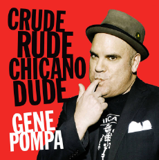

CONNECT
-
-

-
MEDIA
CONTACT
Get in touch with Gene below:
ABOUT
Embed from Getty ImagesComedian and Writer, Gene Pompa’s television credits include numerous appearances on LATE NIGHT WITH CONAN O’BRIEN and several appearances on THE LATE, LATE SHOW on CBS. Other credits include, COMEDY CENTRAL, THE ARSENIO HALL SHOW, HBO, THE LATINO LAUGH FESTIVAL on SHOWTIME, BET, SCRUBS and IN LIVING COLOR.
He recently appeared in two HAPPY MADISON films “Just Go With It” with Adam Sandler and Jennifer Aniston and “Bucky Larson: Born To Be A Star” starring Nick Swardson, Christina Ricci, and Don Johnson.
More recently, Gene starred and produced two one hour comedy specials at The Club Nokia in Downtown Los Angeles at L.A. Live. He also starred in two ½ hour solo stand-up specials, “POMPALICIOUS” for COMEDY CENTRAL and a self-titled ½ hour stand-up special for Nuvo TV. Gene’s offbeat perspective seems to go over extremely well with the college age audience and crosses all racial and ethnic lines. He headlines regularly at comedy clubs across the country; doing a stand-up show with great social relevance and irrelevance.
Gene was born in East Los Angeles and raised in the working-class suburbs of Southern California. He’s been a Mexican-American for most of his life, except for a few years during the 70’s, when he was a “practicing Chicano.” As a product of the multi-ethnic suburbs of Los Angeles, Gene was inspired to utilize universal themes in his stand-up and his writing.